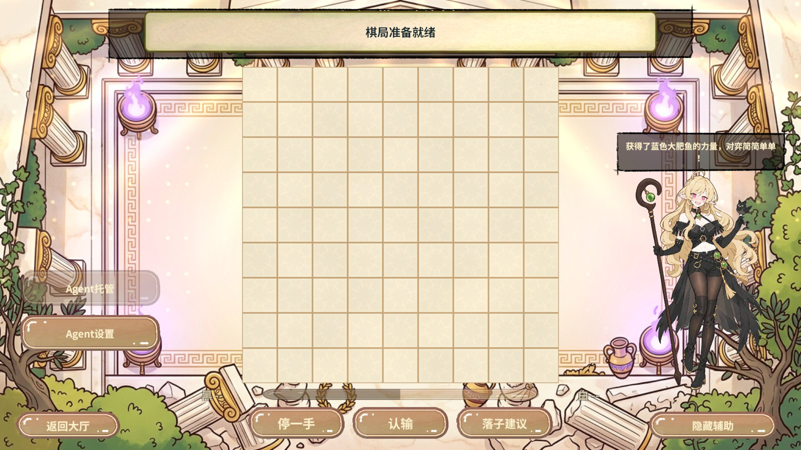
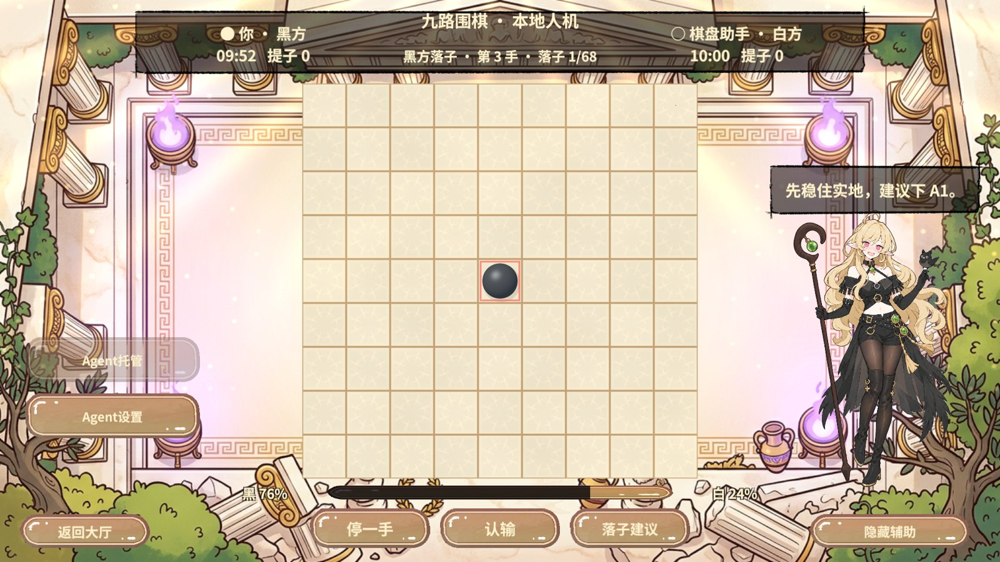
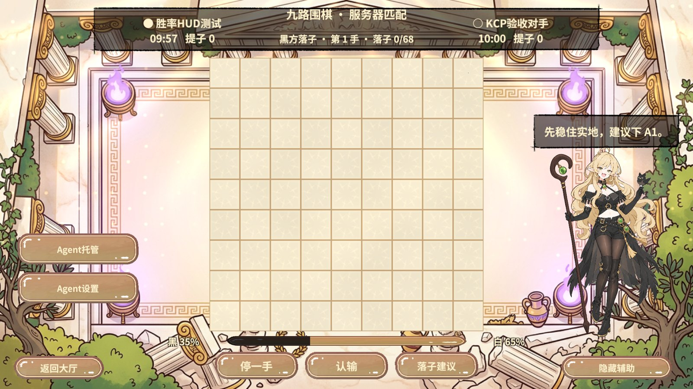
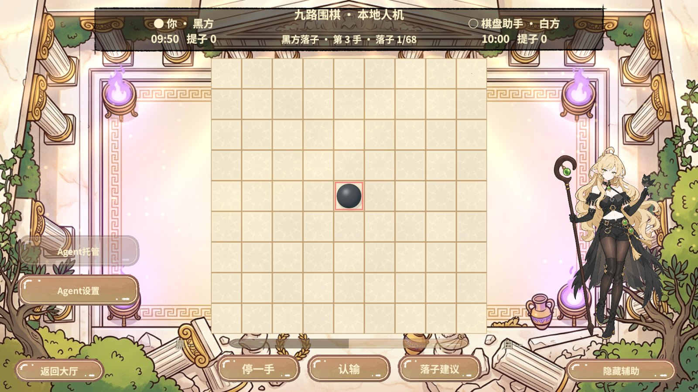
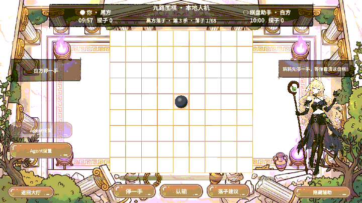

实测结果
| 覆盖范围 | 业务断言 |
|---|---|
| DeepSeek 实际调用 | 使用已启用的本机配置请求一次，返回黑 47%、白 53%。接收后棋谱仍为 0 手，未改动授权设置。 |
| 本地人机与 HUD | 未授权显示破折号。固定 HTTP 回复下，黑白胜率从 35% / 65% 更新至 76% / 24%。鸦鸦对话通过可见和文本尺寸断言，比例动画达到目标。换手后旧分析失去当前标记，分析前后棋谱序号为 2 且指纹相同。越界回复回到破折号。 |
| 局域网 UTP | 真实双端邀请与规则握手。执黑端先得到估计，换手后执白端得到新估计且建议通过落子规则预检。共 22 项断言通过，两端终局指纹相同，完成清理。 |
| 服务器 KCP | 独立 KCP 对手经本机服务端匹配，正式 HUD 出现胜率与鸦鸦建议。对手和玩家的棋谱指纹相同，分析独立于联机协议。 |
黑方估计范围为 0 至 100，白方取补数。两次请求至少间隔 5 秒，失败有冷却。换手后的上一版胜率淡显，落点建议只对应当前棋盘。正式结果是语言模型估计，本次只验证请求与显示链路。
Unity 实拍
原始分辨率 1920 × 1080，截图压缩为 1600 像素宽 JPEG。动图使用连续实拍帧合成。









环境与复现
RevCLI 使用 editor.refresh 和 editor wait 完成导入与编译。随后使用 rev_discover 发现 Editor、Play 动作，rev_call 依次执行 editor.play、pvp.enter。rev_run 执行 50 步，包含 pvp.computer、pvp.analysis-fixture、pvp.lan-analysis-begin、pvp.connect（127.0.0.1:20000）及 pvp.match。返回大厅后的错误数为 0，finally 清理夹具并恢复编辑态。
首轮将棋局转场就绪当作 HUD 已刷新，早了一帧。第二轮发现回大厅时定时刷新可遇到已释放的棋盘，最终修复并复测。网络对局用固定 HTTP 回复保证可重复，真实接口单次单独验证。未执行移动设备和独立 Player 验收。